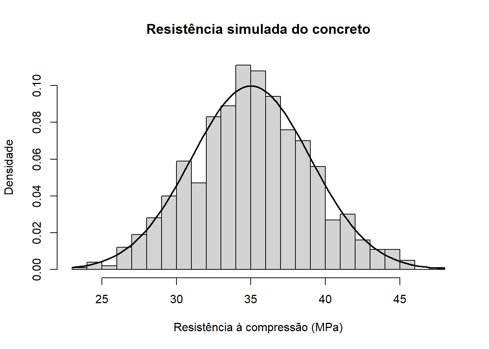
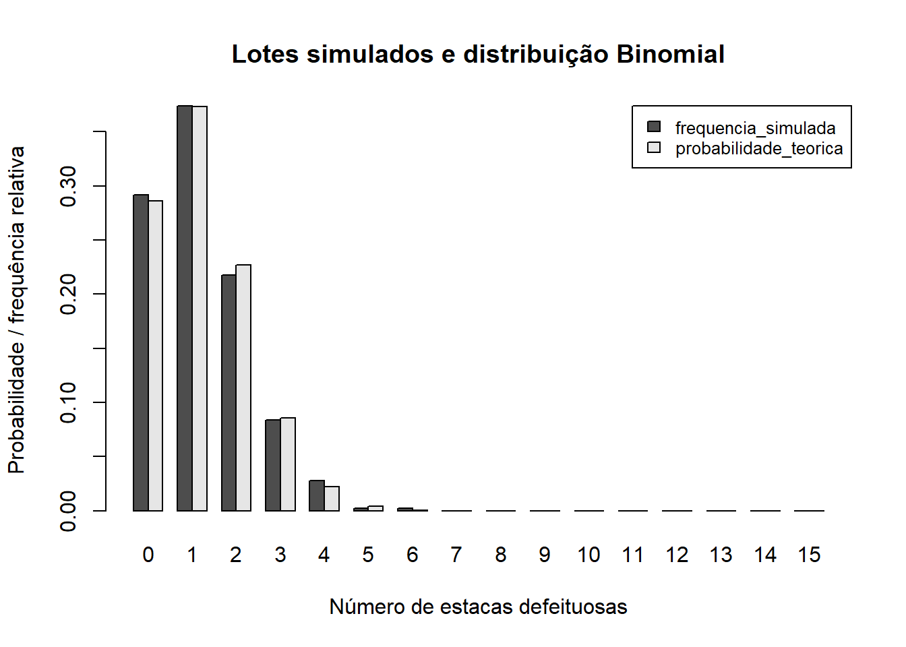
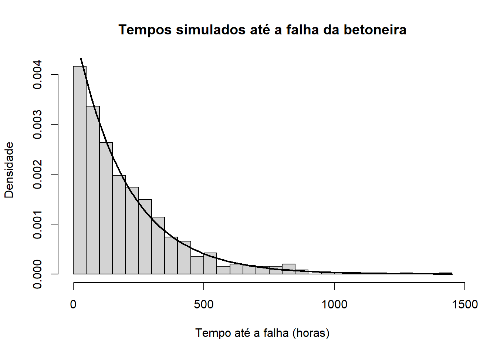
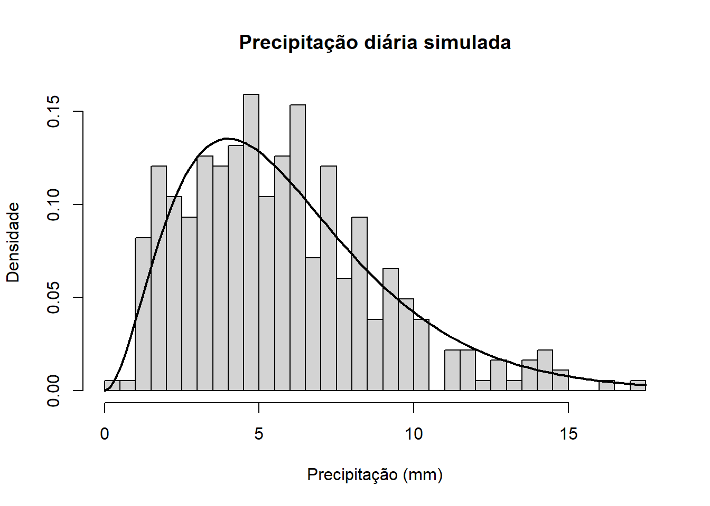

Código
# Parâmetros da distribuição Normal
media_concreto <- 35
dp_concreto <- 4
# Probabilidade de a resistência ser inferior a 30 MPa
prob_menor_30 <- pnorm(30, mean = media_concreto, sd = dp_concreto)
prob_menor_30[1] 0.1056498

A análise estatística é uma ferramenta importante para o planejamento, o controle da qualidade e a avaliação de riscos em obras de engenharia civil. Em projetos de maior complexidade, como uma Pequena Central Hidrelétrica (PCH), diferentes fenômenos apresentam variabilidade e não podem ser descritos adequadamente por um único valor determinístico. A resistência do concreto, a ocorrência de defeitos em elementos pré-moldados, o aparecimento de fissuras, o tempo até a falha de equipamentos, a capacidade de suporte do solo e a precipitação são exemplos de variáveis que podem ser estudadas por meio de modelos probabilísticos.
Neste relatório, são utilizadas distribuições especiais de probabilidade para representar esses fenômenos. Com o auxílio da linguagem R, são calculadas probabilidades, medidas de tendência e dispersão, quantis e resultados de simulações. Os valores simulados são comparados com os resultados teóricos, permitindo observar como a modelagem probabilística pode apoiar a tomada de decisão na engenharia.
Os parâmetros utilizados seguem os valores apresentados nos enunciados e nos exemplos de código. Quando algum parâmetro não aparece preenchido no texto-base, foi adotado o valor indicado pelo exemplo correspondente ou inferido a partir dele. Essas hipóteses são explicitadas na fundamentação teórica e na metodologia para que os cálculos possam ser reproduzidos.
Aplicar distribuições especiais de probabilidade e simulações em R à análise de situações relacionadas à qualidade, à segurança, à confiabilidade e ao planejamento de uma Pequena Central Hidrelétrica.
O trabalho foi desenvolvido por meio de cálculos analíticos e simulações computacionais na linguagem R. Para cada situação, foi identificada uma distribuição de probabilidade, definidos os parâmetros do modelo e aplicadas funções específicas do R. As funções de distribuição acumulada foram utilizadas para calcular probabilidades acumuladas, enquanto as funções de quantis permitiram determinar valores associados a percentis.
As simulações foram realizadas com a função set.seed() para tornar os resultados reproduzíveis. Quando aplicável, histogramas de valores simulados foram comparados com curvas teóricas de densidade. Para as estacas pré-moldadas, as frequências relativas observadas nos lotes simulados foram comparadas às probabilidades teóricas da distribuição Binomial.
Foram adotados os seguintes parâmetros:
| Fenômeno | Distribuição | Parâmetros utilizados |
|---|---|---|
| Resistência do concreto | Normal | média = 35 MPa; desvio padrão = 4 MPa |
| Estacas defeituosas | Binomial | (n=15); (p=0{,}08) |
| Fissuras em túnel | Poisson | (5) fissuras/km |
| Tempo até a falha da betoneira | Exponencial | média = 200 horas; taxa = (1/200) |
| Capacidade de suporte do solo | Weibull | forma (k=2); escala () kPa |
| Precipitação diária | Gama | forma (); taxa (5) mm(^{-1}) |
No caso das fissuras, o enunciado não apresentou o parâmetro por quilômetro no campo correspondente. Foi adotado (5) fissuras/km, pois o exemplo da questão indica () para 2 km. Para a Weibull, foram utilizados os parâmetros forma 2 e escala 150 kPa, conforme a expressão de risco fornecida. Para a distribuição Gama, foram utilizados forma 3 e taxa 0,5, conforme o exemplo com rgamma(365, 3, 0.5). Essas escolhas são hipóteses de trabalho e devem ser substituídas caso os valores oficiais fornecidos pelo docente sejam diferentes.
As análises representam modelos teóricos. Na aplicação a uma obra real, os parâmetros devem ser estimados ou validados com dados de campo, ensaios laboratoriais, registros de manutenção e informações pluviométricas representativas.
A distribuição Normal é contínua e simétrica, sendo frequentemente utilizada para modelar variáveis influenciadas por diversos fatores, como a resistência à compressão do concreto. É definida pela média () e pelo desvio padrão (). A média representa o centro da distribuição, enquanto o desvio padrão indica a dispersão dos valores em torno dela. No R, dnorm(), pnorm(), qnorm() e rnorm() calculam a densidade, a probabilidade acumulada, os quantis e os valores aleatórios, respectivamente (Montgomery e Runger, 2018; R Core Team, 2025).
A distribuição Binomial descreve o número de ocorrências de um evento em uma quantidade fixa de ensaios independentes, cada um com a mesma probabilidade de sucesso. Neste estudo, o evento de interesse é a ocorrência de uma estaca defeituosa. Para (XBinomial(n,p)), a esperança é (E(X)=np) e a variância é (Var(X)=np(1-p)). As funções mais utilizadas no R são dbinom(), pbinom() e rbinom() (Bussab e Morettin, 2017; Montgomery e Runger, 2018).
A distribuição de Poisson é discreta e pode representar a contagem de ocorrências em um intervalo de tempo, comprimento ou área, desde que as ocorrências sejam modeladas por uma taxa média constante. Para (XPoisson()), a esperança e a variância são iguais a (). Para intervalos de comprimentos diferentes, o parâmetro é proporcional à extensão considerada. No R, são utilizadas dpois(), ppois() e rpois() (Bussab e Morettin, 2017; Montgomery e Runger, 2018).
A distribuição Exponencial é contínua e pode representar o tempo de espera até a ocorrência de um evento, como a falha de um equipamento. Sua taxa é (/), em que () é o tempo médio. Uma propriedade importante é a falta de memória: a probabilidade de o equipamento durar por um período adicional, sabendo que já operou por certo tempo, depende apenas do período adicional, sob as hipóteses do modelo. No R, são utilizadas dexp(), pexp(), qexp() e rexp() (Montgomery e Runger, 2018; R Core Team, 2025).
A distribuição Weibull é contínua e flexível, sendo utilizada em estudos de confiabilidade e de variabilidade de propriedades de materiais e sistemas. Neste relatório, ela representa a capacidade de suporte do solo. A distribuição é definida pelos parâmetros de forma (k) e escala (). A função de risco descreve a taxa instantânea de ocorrência do evento em função do valor observado. Para a Weibull, a forma do risco depende do parâmetro (k): se (k>1), o risco é crescente; se (k=1), é constante; e se (k<1), é decrescente. A função pweibull() calcula probabilidades acumuladas e qweibull() calcula quantis (Montgomery e Runger, 2018; R Core Team, 2025).
A distribuição Gama é contínua e pode modelar variáveis positivas e assimétricas, como a precipitação diária. Neste estudo, é parametrizada pela forma () e pela taxa (). Com essa parametrização, a esperança é (E(X)=/) e a variância é (Var(X)=/^2). No R, pgamma(), qgamma() e rgamma() permitem calcular probabilidades acumuladas, quantis e simulações (Bussab e Morettin, 2017; R Core Team, 2025).
A simulação de Monte Carlo utiliza amostras aleatórias geradas a partir de um modelo probabilístico para aproximar resultados, como probabilidades e valores esperados. À medida que o número de simulações aumenta, a frequência relativa tende a se aproximar da probabilidade teórica, embora exista variabilidade amostral. A simulação complementa os cálculos analíticos, mas não substitui a validação dos parâmetros nem a avaliação técnica do fenômeno estudado (Montgomery e Runger, 2018).
A resistência à compressão foi modelada por uma distribuição Normal com média de 35 MPa e desvio padrão de 4 MPa. A seguir, são calculadas as probabilidades solicitadas e o percentil 5. Para a média de dez amostras independentes, utiliza-se que a média amostral tem distribuição Normal com média 35 MPa e erro padrão (4/).
# Parâmetros da distribuição Normal
media_concreto <- 35
dp_concreto <- 4
# Probabilidade de a resistência ser inferior a 30 MPa
prob_menor_30 <- pnorm(30, mean = media_concreto, sd = dp_concreto)
prob_menor_30[1] 0.1056498O resultado corresponde à probabilidade teórica de uma amostra apresentar resistência inferior a 30 MPa. Esse valor permite avaliar a frequência esperada de resultados abaixo desse limite no modelo adotado. A interpretação como não conformidade depende, contudo, dos critérios de aceitação aplicáveis ao concreto e ao projeto.
# Subtrai-se a probabilidade acumulada até 32 MPa daquela até 38 MPa
prob_32_38 <- pnorm(38, mean = media_concreto, sd = dp_concreto) -
pnorm(32, mean = media_concreto, sd = dp_concreto)
prob_32_38[1] 0.5467453O resultado representa a parcela teórica de amostras com resistência entre 32 e 38 MPa. A probabilidade considera simultaneamente os limites inferior e superior do intervalo, permitindo avaliar a concentração dos resultados em uma faixa especificada.
# Valor abaixo do qual se encontram 5% das resistências
percentil_5 <- qnorm(0.05, mean = media_concreto, sd = dp_concreto)
percentil_5[1] 28.42059O percentil 5 é um valor de referência da cauda inferior da distribuição. Pelo modelo, aproximadamente 5% das observações ficam abaixo desse valor. Ele não deve ser confundido automaticamente com a resistência característica normativa, que possui definição e critérios próprios.
# Erro padrão da média de 10 observações independentes
n_amostras <- 10
erro_padrao <- dp_concreto / sqrt(n_amostras)
# Probabilidade de a média amostral ficar abaixo de 33 MPa
prob_media_menor_33 <- pnorm(
33, mean = media_concreto, sd = erro_padrao
)
prob_media_menor_33[1] 0.05692315A média de um conjunto de dez amostras apresenta menor dispersão que uma observação individual, pois seu erro padrão é dividido pela raiz quadrada do tamanho da amostra. Assim, a probabilidade calculada avalia a ocorrência de uma média amostral inferior a 33 MPa, e não a probabilidade de uma única amostra apresentar esse resultado.
# Gera 1.000 valores reproduzíveis da distribuição Normal
set.seed(123)
resistencias <- rnorm(1000, mean = media_concreto, sd = dp_concreto)
# Histograma em escala de densidade
hist(
resistencias,
probability = TRUE,
breaks = 25,
main = "Resistência simulada do concreto",
xlab = "Resistência à compressão (MPa)",
ylab = "Densidade"
)
# Adiciona a curva teórica da distribuição Normal
curve(
dnorm(x, mean = media_concreto, sd = dp_concreto),
add = TRUE,
lwd = 2
)
# Estatísticas descritivas da amostra simulada
mean(resistencias)[1] 35.06451sd(resistencias)[1] 3.96678mean(resistencias < 30)[1] 0.106Espera-se que o histograma apresente formato aproximadamente simétrico, com maior concentração de valores próximos de 35 MPa. A curva teórica serve como referência, mas o histograma não precisa coincidir exatamente com ela, pois os valores foram gerados aleatoriamente. A média, o desvio padrão e a proporção abaixo de 30 MPa variam de uma simulação para outra.
Considera-se um lote de 15 estacas, com probabilidade de defeito de 8% por unidade. A variável aleatória (X) representa o número de estacas defeituosas no lote. O modelo Binomial pressupõe independência entre as estacas e probabilidade de defeito constante.
n_estacas <- 15
p_defeito <- 0.08
# Probabilidade de exatamente zero estacas defeituosas
prob_zero_defeitos <- dbinom(0, size = n_estacas, prob = p_defeito)
prob_zero_defeitos[1] 0.2862974Esse resultado estima a chance de um lote de 15 estacas não apresentar defeitos, considerando a taxa histórica adotada. A probabilidade é relevante para o planejamento de inspeções e para a estimativa da quantidade de elementos que poderá exigir avaliação adicional.
# P(X <= 2)
prob_ate_2_defeitos <- pbinom(2, size = n_estacas, prob = p_defeito)
prob_ate_2_defeitos[1] 0.8870349A probabilidade acumulada inclui os lotes com zero, uma ou duas estacas defeituosas. O resultado ajuda a avaliar a chance de o lote apresentar uma quantidade reduzida de ocorrências, sem definir por si só o critério de aceitação do fornecimento.
# Usa o complemento de P(X <= 3)
prob_4_ou_mais <- 1 - pbinom(3, size = n_estacas, prob = p_defeito)
prob_4_ou_mais[1] 0.02731357A ocorrência de quatro ou mais estacas defeituosas representa um cenário de maior atenção para o controle de qualidade. Embora a taxa individual de defeito seja relativamente baixa no modelo, o resultado deve ser interpretado em conjunto com os procedimentos de inspeção, rastreabilidade e aceitação do lote.
# E(X) = n*p e Var(X) = n*p*(1-p)
esperanca_estacas <- n_estacas * p_defeito
variancia_estacas <- n_estacas * p_defeito * (1 - p_defeito)
esperanca_estacas[1] 1.2variancia_estacas[1] 1.104A esperança representa o número médio de estacas defeituosas esperado por lote ao longo de muitos lotes semelhantes. Ela não significa que todo lote apresentará exatamente esse número. A variância expressa a dispersão do número de defeitos em torno da esperança.
# Simula 500 lotes independentes de 15 estacas
set.seed(123)
lotes_simulados <- rbinom(500, size = n_estacas, prob = p_defeito)
# Frequências relativas observadas, incluindo valores de zero a 15
frequencias_simuladas <- prop.table(
table(factor(lotes_simulados, levels = 0:n_estacas))
)
# Probabilidades teóricas para cada quantidade possível de defeitos
probabilidades_teoricas <- dbinom(0:n_estacas, size = n_estacas, prob = p_defeito)
comparacao_binomial <- data.frame(
defeitos = 0:n_estacas,
frequencia_simulada = as.numeric(frequencias_simuladas),
probabilidade_teorica = probabilidades_teoricas
)
comparacao_binomial defeitos frequencia_simulada probabilidade_teorica
1 0 0.292 2.862974e-01
2 1 0.374 3.734314e-01
3 2 0.218 2.273061e-01
4 3 0.084 8.565156e-02
5 4 0.028 2.234389e-02
6 5 0.002 4.274482e-03
7 6 0.002 6.194902e-04
8 7 0.000 6.925978e-05
9 8 0.000 6.022589e-06
10 9 0.000 4.073249e-07
11 10 0.000 2.125173e-08
12 11 0.000 8.399894e-10
13 12 0.000 2.434752e-11
14 13 0.000 4.885790e-13
15 14 0.000 6.069304e-15
16 15 0.000 3.518437e-17# Gráfico comparativo entre frequências simuladas e probabilidades teóricas
barplot(
rbind(
frequencia_simulada = comparacao_binomial$frequencia_simulada,
probabilidade_teorica = comparacao_binomial$probabilidade_teorica
),
beside = TRUE,
names.arg = comparacao_binomial$defeitos,
xlab = "Número de estacas defeituosas",
ylab = "Probabilidade / frequência relativa",
main = "Lotes simulados e distribuição Binomial",
legend.text = TRUE,
args.legend = list(x = "topright", cex = 0.8)
)
As frequências simuladas tendem a se aproximar das probabilidades teóricas, mas podem apresentar diferenças, especialmente para quantidades de defeitos pouco frequentes. Como foram simulados 500 lotes, cada lote representa 0,2 ponto percentual da frequência relativa. Aumentar o número de simulações tende a reduzir a variabilidade da comparação, sem garantir igualdade exata.
O número de fissuras foi modelado por uma distribuição de Poisson com média de 2,5 fissuras por quilômetro. Para dois quilômetros, o parâmetro é duplicado, resultando em (), sob a hipótese de taxa constante e de ocorrências independentes.
lambda_km <- 2.5
# Probabilidade de zero fissuras em 1 km
prob_zero_fissuras <- dpois(0, lambda = lambda_km)
prob_zero_fissuras[1] 0.082085O resultado representa a probabilidade teórica de um trecho de um quilômetro não apresentar fissuras, segundo a taxa média adotada. Na prática, a adequação desse modelo depende das condições geológicas, do método construtivo e da consistência dos registros de inspeção.
# P(X >= 3) = 1 - P(X <= 2)
prob_3_ou_mais_fissuras <- 1 - ppois(2, lambda = lambda_km)
prob_3_ou_mais_fissuras[1] 0.4561869Essa probabilidade quantifica a possibilidade de encontrar pelo menos três fissuras por quilômetro. O resultado pode auxiliar na organização das inspeções, mas não indica diretamente a gravidade das fissuras, que depende de características como abertura, extensão, localização e evolução.
# P(1 <= X <= 4)
prob_1_a_4_fissuras <- ppois(4, lambda = lambda_km) -
ppois(0, lambda = lambda_km)
prob_1_a_4_fissuras[1] 0.809093O cálculo considera os valores inteiros de uma a quatro fissuras, inclusive. A probabilidade descreve a frequência esperada dessa faixa de contagem no modelo, sem substituir a avaliação técnica das causas ou das consequências de cada ocorrência.
# Para 2 km, a média esperada é 2 * 2,5 = 5 fissuras
lambda_2km <- 2 * lambda_km
prob_5_fissuras_2km <- dpois(5, lambda = lambda_2km)
prob_5_fissuras_2km[1] 0.1754674O parâmetro foi ajustado proporcionalmente ao comprimento do túnel. O resultado é a probabilidade de exatamente cinco fissuras ao longo de dois quilômetros, desde que as hipóteses da distribuição de Poisson sejam razoáveis para o trecho analisado.
# Na distribuição de Poisson, esperança e variância são iguais a lambda
esperanca_fissuras <- lambda_km
variancia_fissuras <- lambda_km
esperanca_fissuras[1] 2.5variancia_fissuras[1] 2.5Para um quilômetro, tanto a esperança quanto a variância são 2,5. A igualdade entre essas medidas é uma propriedade da distribuição de Poisson. Se os dados reais apresentarem dispersão muito superior à média, poderá ser necessário avaliar outro modelo ou segmentar os trechos conforme suas características.
O tempo até a falha da betoneira foi modelado por uma distribuição Exponencial com média de 200 horas. A taxa é, portanto, (1/200) falhas por hora no modelo. Essa representação supõe uma taxa de falha constante ao longo do tempo.
media_betoneira <- 200
taxa_betoneira <- 1 / media_betoneira
# P(X > 250), calculada diretamente pela função de sobrevivência
prob_mais_250 <- pexp(
250, rate = taxa_betoneira, lower.tail = FALSE
)
prob_mais_250[1] 0.2865048O valor representa a probabilidade de a betoneira permanecer em operação por mais de 250 horas, de acordo com o modelo. Essa estimativa pode contribuir para o planejamento de manutenção e de equipamentos de reserva, mas não substitui os dados do fabricante nem o histórico real de operação.
# P(X < 100)
prob_menos_100 <- pexp(100, rate = taxa_betoneira)
prob_menos_100[1] 0.3934693A probabilidade calculada corresponde à parcela de equipamentos que, segundo o modelo, falharia antes de completar 100 horas. Um resultado elevado pode justificar atenção à manutenção preventiva, às condições de operação e à adequação do equipamento às atividades executadas.
# Mediana: tempo até o qual 50% das falhas já teriam ocorrido
mediana_betoneira <- qexp(0.5, rate = taxa_betoneira)
mediana_betoneira[1] 138.6294A mediana divide a distribuição em duas partes iguais: metade dos tempos modelados fica abaixo dela e metade acima. Ela é diferente da média e não deve ser interpretada como prazo garantido de funcionamento.
# P(X > 250 | X > 150), usando a propriedade da falta de memória
prob_condicional <- pexp(250, rate = taxa_betoneira, lower.tail = FALSE) /
pexp(150, rate = taxa_betoneira, lower.tail = FALSE)
prob_condicional[1] 0.6065307# Comparação com a probabilidade de durar mais 100 horas a partir do início
prob_mais_100 <- pexp(100, rate = taxa_betoneira, lower.tail = FALSE)
prob_mais_100[1] 0.6065307Pela propriedade da falta de memória da distribuição Exponencial, as duas probabilidades devem ser iguais, salvo diferenças numéricas de arredondamento. Isso não significa que a idade do equipamento seja irrelevante em todos os contextos reais: a propriedade decorre da hipótese de taxa de falha constante e pode não representar equipamentos sujeitos a desgaste progressivo.
# Simula tempos de falha em horas
set.seed(123)
tempos_falha <- rexp(1000, rate = taxa_betoneira)
# Histograma em escala de densidade
hist(
tempos_falha,
probability = TRUE,
breaks = 30,
main = "Tempos simulados até a falha da betoneira",
xlab = "Tempo até a falha (horas)",
ylab = "Densidade"
)
# Curva teórica da distribuição Exponencial
curve(
dexp(x, rate = taxa_betoneira),
add = TRUE,
lwd = 2
)
# Resumo da simulação
mean(tempos_falha)[1] 205.9959median(tempos_falha)[1] 146.2333A distribuição Exponencial apresenta maior densidade nos tempos próximos de zero e uma cauda à direita, com probabilidade decrescente para tempos maiores. O histograma simulado deve refletir esse padrão geral, embora apresente oscilações devido ao tamanho finito da amostra.
A capacidade de suporte do solo foi representada por uma distribuição Weibull com parâmetro de forma (k=2) e escala () kPa. O modelo permite estimar probabilidades e quantis de uma variável positiva. A adoção desses parâmetros é uma hipótese didática, não uma caracterização geotécnica de um terreno específico.
forma_solo <- 2
escala_solo <- 150
# Probabilidade de capacidade de suporte inferior a 100 kPa
prob_solo_menor_100 <- pweibull(
100, shape = forma_solo, scale = escala_solo
)
prob_solo_menor_100[1] 0.3588196Esse resultado expressa a probabilidade teórica de a capacidade de suporte ficar abaixo de 100 kPa. Em um projeto real, o valor deve ser comparado às solicitações de projeto e aos parâmetros geotécnicos obtidos por investigação do subsolo, considerando os coeficientes de segurança e os critérios normativos pertinentes.
# Diferença entre as probabilidades acumuladas nos limites do intervalo
prob_solo_120_200 <- pweibull(
200, shape = forma_solo, scale = escala_solo
) - pweibull(
120, shape = forma_solo, scale = escala_solo
)
prob_solo_120_200[1] 0.3582791A probabilidade representa a parcela teórica dos valores situada entre 120 e 200 kPa. Ela descreve o modelo adotado, mas não garante que uma camada de solo real apresente essa distribuição ou esses parâmetros.
# Valor abaixo do qual se encontram 90% dos valores modelados
percentil_90_solo <- qweibull(
0.90, shape = forma_solo, scale = escala_solo
)
percentil_90_solo[1] 227.6141O percentil 90 é um quantil superior da distribuição. Aproximadamente 90% dos valores ficam abaixo dele e 10% ficam acima. Para dimensionamento geotécnico, a escolha de um valor característico deve seguir critérios normativos e geotécnicos próprios, e não apenas um percentil arbitrário.
# Fórmulas teóricas da média e da variância da Weibull
media_solo <- escala_solo * gamma(1 + 1 / forma_solo)
variancia_solo <- escala_solo^2 * (
gamma(1 + 2 / forma_solo) - gamma(1 + 1 / forma_solo)^2
)
dp_solo <- sqrt(variancia_solo)
media_solo[1] 132.934variancia_solo[1] 4828.541dp_solo[1] 69.48771A média indica o valor central esperado no modelo, enquanto o desvio padrão expressa a dispersão da capacidade de suporte. Essas medidas são úteis para caracterizar a distribuição, mas não substituem a determinação dos valores de projeto a partir de sondagens, ensaios e avaliação de um profissional habilitado.
# Sequência de valores positivos para evitar avaliação em zero
x_seq <- seq(0.1, 300, by = 1)
# Função de risco da Weibull:
# h(x) = (k/lambda) * (x/lambda)^(k-1)
hazard_solo <- (forma_solo / escala_solo) *
(x_seq / escala_solo)^(forma_solo - 1)
plot(
x_seq,
hazard_solo,
type = "l",
lwd = 2,
main = "Função de risco da distribuição Weibull",
xlab = "Capacidade de suporte modelada (kPa)",
ylab = "Função de risco"
)
Como o parâmetro de forma é (k=2), a função de risco é crescente em relação ao valor de (x). Matematicamente, isso descreve uma taxa de risco crescente no modelo Weibull. Entretanto, a leitura geotécnica deve ser feita com cautela: a capacidade de suporte do solo não é, por si só, um tempo até falha. A função de risco aqui é uma característica matemática da distribuição adotada e não deve ser interpretada diretamente como probabilidade de ruptura de uma fundação sem um modelo físico e dados apropriados.
A precipitação diária foi modelada por uma distribuição Gama com forma () e taxa (5). Nessa parametrização do R, o segundo argumento de pgamma(), qgamma() e rgamma() é rate, e não escala. A média teórica é de 6 mm e a variância é de 12 mm².
forma_chuva <- 3
taxa_chuva <- 0.5
# P(X > 10)
prob_chuva_maior_10 <- pgamma(
10, shape = forma_chuva, rate = taxa_chuva,
lower.tail = FALSE
)
prob_chuva_maior_10[1] 0.124652O resultado estima a probabilidade de um dia apresentar precipitação superior a 10 mm durante o período representado pelo modelo. Para uso operacional em uma PCH, seria necessário verificar se os parâmetros descrevem adequadamente a estação chuvosa e a região do empreendimento.
# P(5 < X < 15)
prob_chuva_5_15 <- pgamma(
15, shape = forma_chuva, rate = taxa_chuva
) - pgamma(
5, shape = forma_chuva, rate = taxa_chuva
)
prob_chuva_5_15[1] 0.5235564A probabilidade representa a proporção teórica de dias com precipitação entre 5 e 15 mm. Esse tipo de informação pode apoiar análises preliminares de planejamento, desde que complementado por dados meteorológicos locais e pela consideração da sazonalidade.
# Quantil que deixa 95% dos valores abaixo dele
percentil_95_chuva <- qgamma(
0.95, shape = forma_chuva, rate = taxa_chuva
)
percentil_95_chuva[1] 12.59159O percentil 95 é um indicador de valores elevados de precipitação diária no modelo. Ele não corresponde, por si só, a uma chuva de projeto para dimensionamento hidráulico, pois essa aplicação exige análise de duração, período de retorno, séries locais e critérios técnicos específicos.
# Para a Gama parametrizada por forma e taxa:
# E(X) = forma/taxa; Var(X) = forma/taxa^2
media_chuva <- forma_chuva / taxa_chuva
variancia_chuva <- forma_chuva / taxa_chuva^2
media_chuva[1] 6variancia_chuva[1] 12A média teórica é expressa em milímetros e a variância em milímetros quadrados. A variância não deve ser interpretada como uma quantidade de chuva, mas como uma medida da dispersão dos valores em torno da média.
# Simula um ano de valores diários segundo a distribuição adotada
set.seed(123)
chuva_simulada <- rgamma(
365, shape = forma_chuva, rate = taxa_chuva
)
# Histograma em escala de densidade
hist(
chuva_simulada,
probability = TRUE,
breaks = 25,
main = "Precipitação diária simulada",
xlab = "Precipitação (mm)",
ylab = "Densidade"
)
# Curva teórica para comparação
curve(
dgamma(x, shape = forma_chuva, rate = taxa_chuva),
add = TRUE,
lwd = 2
)
# Resumo dos valores simulados
mean(chuva_simulada)[1] 5.681689var(chuva_simulada)[1] 9.6437quantile(chuva_simulada, 0.95) 95%
11.55333 A distribuição Gama é assimétrica à direita e assume valores não negativos. O histograma deve mostrar concentração de valores menores e uma cauda para precipitações maiores. Como a simulação contém 365 observações, as estatísticas amostrais não precisam coincidir exatamente com os valores teóricos. Além disso, o modelo descrito não inclui explicitamente dias sem chuva, sazonalidade ou dependência entre dias consecutivos.
Nesta etapa, são realizadas 10.000 simulações da resistência do concreto. A proporção simulada de resultados abaixo de 30 MPa é comparada com a probabilidade teórica calculada pela distribuição Normal.
# Número de simulações de Monte Carlo
set.seed(123)
n_sim <- 10000
# Simula valores de resistência do concreto
concreto_mc <- rnorm(
n_sim, mean = media_concreto, sd = dp_concreto
)
# Estimativa por simulação: proporção abaixo de 30 MPa
prob_mc <- mean(concreto_mc < 30)
# Probabilidade teórica calculada pela distribuição Normal
prob_teorica <- pnorm(
30, mean = media_concreto, sd = dp_concreto
)
# Comparação dos resultados
comparacao_mc <- data.frame(
metodo = c("Monte Carlo (10.000 simulações)", "Teórico (Normal)"),
probabilidade = c(prob_mc, prob_teorica)
)
comparacao_mc metodo probabilidade
1 Monte Carlo (10.000 simulações) 0.1060000
2 Teórico (Normal) 0.1056498# Diferença absoluta entre a estimativa simulada e a teórica
diferenca_absoluta <- abs(prob_mc - prob_teorica)
diferenca_absoluta[1] 0.0003502263A estimativa de Monte Carlo utiliza a frequência relativa dos valores simulados abaixo de 30 MPa. Já o resultado teórico é obtido diretamente pela função acumulada da distribuição Normal. A diferença entre eles decorre da variabilidade aleatória da simulação. Com 10.000 observações, espera-se uma aproximação razoável, mas não uma igualdade exata.
No contexto da engenharia civil, simulações desse tipo permitem estimar frequências de eventos e explorar cenários quando os cálculos analíticos são difíceis ou quando há várias variáveis envolvidas. Ainda assim, os resultados dependem da qualidade dos parâmetros e das hipóteses do modelo. Para apoiar decisões de segurança, os modelos devem ser confrontados com dados observados e com os critérios normativos aplicáveis.
O quadro a seguir reúne os principais indicadores calculados no relatório. Os valores são gerados diretamente pelas expressões do R, de modo que podem ser conferidos e atualizados durante a execução do documento.
# Tabela sintética dos principais resultados teóricos
resumo_resultados <- data.frame(
analise = c(
"Concreto: P(X < 30 MPa)",
"Concreto: P(32 < X < 38 MPa)",
"Concreto: percentil 5 (MPa)",
"Concreto: P(média de 10 < 33 MPa)",
"Estacas: P(nenhum defeito)",
"Estacas: P(no máximo 2 defeitos)",
"Estacas: P(4 ou mais defeitos)",
"Fissuras: P(nenhuma em 1 km)",
"Fissuras: P(3 ou mais em 1 km)",
"Fissuras: P(exatamente 5 em 2 km)",
"Betoneira: P(durar mais de 250 h)",
"Betoneira: mediana (h)",
"Solo: P(capacidade < 100 kPa)",
"Solo: percentil 90 (kPa)",
"Chuva: P(precipitação > 10 mm)",
"Chuva: percentil 95 (mm)"
),
resultado = c(
prob_menor_30,
prob_32_38,
percentil_5,
prob_media_menor_33,
prob_zero_defeitos,
prob_ate_2_defeitos,
prob_4_ou_mais,
prob_zero_fissuras,
prob_3_ou_mais_fissuras,
prob_5_fissuras_2km,
prob_mais_250,
mediana_betoneira,
prob_solo_menor_100,
percentil_90_solo,
prob_chuva_maior_10,
percentil_95_chuva
)
)
knitr::kable(
resumo_resultados,
digits = 4,
col.names = c("Indicador", "Resultado")
)| Indicador | Resultado |
|---|---|
| Concreto: P(X < 30 MPa) | 0.1056 |
| Concreto: P(32 < X < 38 MPa) | 0.5467 |
| Concreto: percentil 5 (MPa) | 28.4206 |
| Concreto: P(média de 10 < 33 MPa) | 0.0569 |
| Estacas: P(nenhum defeito) | 0.2863 |
| Estacas: P(no máximo 2 defeitos) | 0.8870 |
| Estacas: P(4 ou mais defeitos) | 0.0273 |
| Fissuras: P(nenhuma em 1 km) | 0.0821 |
| Fissuras: P(3 ou mais em 1 km) | 0.4562 |
| Fissuras: P(exatamente 5 em 2 km) | 0.1755 |
| Betoneira: P(durar mais de 250 h) | 0.2865 |
| Betoneira: mediana (h) | 138.6294 |
| Solo: P(capacidade < 100 kPa) | 0.3588 |
| Solo: percentil 90 (kPa) | 227.6141 |
| Chuva: P(precipitação > 10 mm) | 0.1247 |
| Chuva: percentil 95 (mm) | 12.5916 |
De forma integrada, as distribuições escolhidas permitem representar diferentes tipos de variabilidade: medidas contínuas aproximadamente simétricas, contagens de ocorrências, tempos até falha e grandezas positivas assimétricas. A comparação entre cálculos teóricos e simulações também evidencia que a simulação é uma ferramenta de validação e exploração, e não uma garantia de que o comportamento real será idêntico ao modelo.
O relatório aplicou seis distribuições especiais de probabilidade a situações relacionadas à construção de uma Pequena Central Hidrelétrica: Normal para a resistência do concreto, Binomial para a quantidade de estacas defeituosas, Poisson para a contagem de fissuras, Exponencial para o tempo até a falha de uma betoneira, Weibull para a capacidade de suporte do solo e Gama para a precipitação diária. Foram calculadas probabilidades, quantis e medidas de tendência e dispersão, além de gráficos e simulações em R.
As simulações permitiram comparar frequências observadas com probabilidades teóricas e visualizar a forma das distribuições. As diferenças encontradas são esperadas em amostras finitas e reforçam a importância de utilizar um número adequado de simulações e de manter a reprodutibilidade por meio da definição de uma semente aleatória.
Os resultados podem apoiar análises preliminares de qualidade, confiabilidade e planejamento. Entretanto, sua aplicação em decisões de engenharia exige cuidado com as hipóteses adotadas. Os parâmetros utilizados para fissuras, capacidade de suporte do solo e precipitação foram definidos a partir dos exemplos do enunciado, uma vez que alguns valores não estavam preenchidos no texto-base. Portanto, devem ser confirmados antes de qualquer uso em projeto real. Em especial, a probabilidade de resistência abaixo de um limite não substitui os procedimentos normativos de controle do concreto; a distribuição de capacidade do solo não substitui investigações geotécnicas; e a distribuição de precipitação não substitui estudos hidrológicos de projeto.
Conclui-se que a modelagem probabilística amplia a compreensão da variabilidade dos fenômenos de engenharia e oferece subsídios quantitativos para a tomada de decisão. Seu uso é mais consistente quando combinado com dados confiáveis, conhecimento técnico e verificação dos critérios normativos pertinentes.